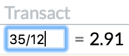
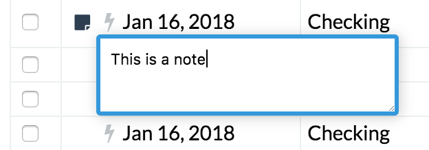

General
Saving
Almost all changes you make in Buckets automatically save immediately. That’s why there’s no save button. Currently, the only exception to this is when recording macros (because updating macros must be explicitly saved).
Calculators Everywhere!
Somewhat like a spreadsheet, every field in Buckets where you type in numbers is a calculator. For instance, you can type 2+2 or 35/12:

Notes
Accounts, transactions, buckets and bucket groups can all have searchable notes attached to them. Hover over the thing you’d like to note, then click on the sticky note icon and type away!
